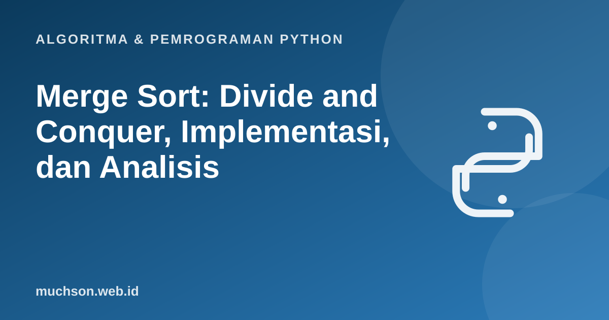

Beranda › Artikel › Algoritma & Pemrograman Python
Algoritma & Pemrograman PythonMerge Sort: Divide and Conquer, Implementasi, dan Analisis
Merge sort adalah contoh sempurna strategi divide and conquer: pecah masalah menjadi bagian yang lebih kecil, selesaikan masing-masing, lalu gabungkan hasilnya. Hasilnya algoritma pengurutan yang kecepatannya terjamin O(n log n) pada semua masukan, dan yang menjadi dasar pengurutan di banyak pustaka standar.
Sebaiknya sudah paham: rekursi, list Python, analisis kompleksitas

Setelah membaca dan mencoba materi ini, Anda mampu:
- menjelaskan tiga langkah divide, conquer, combine pada merge sort
- mengimplementasikan fungsi merge dan merge_sort dalam Python
- menelusuri proses penggabungan dua list terurut
- menurunkan kompleksitas O(n log n) dari pohon rekursi
- menjelaskan kestabilan dan biaya memori merge sort
Ide: gabungkan dua list yang sudah terurut itu mudah
Bila Anda punya dua list yang sudah terurut, menggabungkannya menjadi satu list terurut hanya butuh satu kali lewat: bandingkan elemen terdepan keduanya, ambil yang lebih kecil, ulangi. Merge sort memanfaatkan itu dengan membelah list sampai tiap bagian berisi satu elemen (yang otomatis terurut), lalu menggabungkannya kembali.
Langkah kunci: fungsi merge
Implementasi lengkap
def merge(kiri, kanan):
hasil, i, j = [], 0, 0
while i < len(kiri) and j < len(kanan):
if kiri[i] <= kanan[j]: # <= menjaga kestabilan
hasil.append(kiri[i]); i += 1
else:
hasil.append(kanan[j]); j += 1
hasil.extend(kiri[i:])
hasil.extend(kanan[j:])
return hasil
def merge_sort(data):
if len(data) <= 1: # kasus dasar: sudah terurut
return data
tengah = len(data) // 2
kiri = merge_sort(data[:tengah]) # conquer bagian kiri
kanan = merge_sort(data[tengah:]) # conquer bagian kanan
return merge(kiri, kanan) # combine
print(merge_sort([38, 27, 43, 3, 9, 82, 10, 5]))
print(merge_sort([]), merge_sort([7]), merge_sort([3, 3, 1, 1]))[3, 5, 9, 10, 27, 38, 43, 82]
[] [7] [1, 1, 3, 3]
Mengapa O(n log n)?
- Tinggi pohon rekursi adalah log₂ n (setiap tingkat membelah dua).
- Pada setiap tingkat, total elemen yang digabung adalah n, sehingga kerja per tingkat Θ(n).
- Total = n × log n = Θ(n log n).
T(n) = 2 T(n/2) + Θ(n) ⇒ T(n) = Θ(n log n)
def merge_sort_hitung(data, c):
if len(data) <= 1:
return data
t = len(data) // 2
kiri, kanan = merge_sort_hitung(data[:t], c), merge_sort_hitung(data[t:], c)
hasil, i, j = [], 0, 0
while i < len(kiri) and j < len(kanan):
c[0] += 1 # hitung perbandingan
if kiri[i] <= kanan[j]:
hasil.append(kiri[i]); i += 1
else:
hasil.append(kanan[j]); j += 1
return hasil + kiri[i:] + kanan[j:]
import random, math
random.seed(7)
print(" n perbandingan n*log2(n)")
for n in [100, 1000, 10000]:
c = [0]
merge_sort_hitung([random.random() for _ in range(n)], c)
print(f"{n:>5} {c[0]:>12} {int(n * math.log2(n)):>12}") n perbandingan n*log2(n)
100 543 664
1000 8702 9965
10000 120495 132877
Sifat penting
| Sifat | Merge sort | Catatan |
|---|---|---|
| Waktu terbaik / rata-rata / terburuk | Θ(n log n) pada semuanya | Tidak peka terhadap urutan masukan |
| Ruang tambahan | Θ(n) | Butuh list bantu untuk penggabungan |
| Stabil | Ya | Syaratnya memakai <= saat membandingkan |
| Cocok untuk | Data besar, linked list, data di disk (external sort) | Mudah diparalelkan |
Python memakai Timsort untuk sorted() dan list.sort(): gabungan merge sort dan insertion sort yang memanfaatkan bagian data yang sudah terurut. Dalam praktik, gunakan sorted(), dan pelajari merge sort untuk memahami caranya.
1. Gabungkan manual [1, 4, 7] dan [2, 3, 9]. Tuliskan list hasil setiap langkah.
2. Berapa kira-kira perbandingan untuk mengurutkan 1.024 elemen dengan merge sort?
3. Ubah merge_sort agar mengurutkan dari besar ke kecil.
if kiri[i] >= kanan[j].4. Mengapa merge sort kurang cocok bila memori sangat terbatas?
- Merge sort: bagi dua, urutkan tiap bagian secara rekursif, gabungkan dengan merge linear.
- Θ(n log n) pada semua kasus, stabil, tetapi butuh ruang tambahan Θ(n).
- Gabungan dua list terurut dilakukan dengan dua penunjuk yang bergerak maju.
- Timsort, pengurut bawaan Python, adalah turunan merge sort.
Tanya jawab
Apakah merge sort lebih cepat dari quick sort?
Bisakah merge sort dilakukan tanpa rekursi?
Mengapa pengurutan butuh minimal n log n perbandingan?
Referensi
- Cormen, Leiserson, Rivest, Stein, Introduction to Algorithms (edisi ke-4, MIT Press, 2022)
- Robert Sedgewick dan Kevin Wayne, Algorithms (edisi ke-4), materi pendamping algs4.cs.princeton.edu
- MIT OpenCourseWare 6.006: Introduction to Algorithms
- Dokumentasi Python: Sorting Techniques (stabilitas pengurutan)
- Tim Peters, deskripsi Timsort (listsort.txt, sumber CPython)